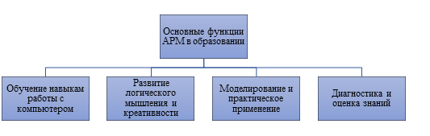

Тема 1.2. Основные функции АРМ. Классификация АРМ

Функции
АРМ:
•
Проблемно-профессиональная
ориентация на конкретную предметную область. АРМ являются главным инструментом
общения человека с вычислительными системами, играют роль автономных рабочих
мест, интеллектуальных терминалов больших ЭВМ, рабочих станций в локальных
сетях. АРМ имеют открытую архитектуру и легко адаптируются к проблемным
областям.
•
Оперативная
обработка информации сразу же по ее поступлении, хранение результатов обработки
по требованию пользователя.
•
Усиление
интеграции управленческих функций - АРМ должно обеспечивать работу в
многофункциональном режиме.
•
Децентрализованная
одновременная обработка экономической информации на рабочих местах исполнителей
в составе распределенной базы данных. Через системное устройство и каналы связи
АРМ имеют выход в ПК и базы данных других пользователей и обеспечивают тем самым
совместное функционирование нескольких ЭВМ в процессе коллективной
обработки.
• Информационно-справочное обслуживание.
К
АРМ предъявляются следующие требования:
·
Системность – АРМ
следует воспринимать как комплексную систему, структура которой определяется
поставленными задачами и целями;
·
Гибкость –
возможность адаптации рабочего места под требования конкретной профессиональной
области с учетом необходимого оборудования;
·
Стабильность –
система должна бесперебойно выполнять ключевые функции, а в случае сбоев —
быстро восстанавливаться;
·
Эффективность –
соотношение затрат и качества выполняемых операций должно быть
оптимальным.
·
Эргономичность,
соответствие нормам САНПиН - комплекс мероприятий, которые обеспечивают
максимально комфортные условия использования АРМ и уменьшают отрицательные
воздействия на человека со стороны ЭВМ (наборы специальной мебели, картотеки для
хранения документации и магнитных носителей).
·
Работа ПК в
диалоговом режиме (когда время ответа системы на запрос средней сложности
составляет 2-5 секунд).
·
Методическое
обеспечение (МО) - состоит из методических указаний, рекомендаций и положений по
внедрению, эксплуатации и оценке эффективности функционирования
АРМ.
·
Лингвистическое
обеспечение (ЛО) - включает языки общения с пользователем, языки запросов,
информационно-поисковые языки, языки-посредники в сетях и т.д., обеспечивает
однозначное смысловое соответствие действий пользователя и аппаратной части в
виде ПЭВМ.
·
Правовое
обеспечение (ПО) - система правовых документов, определяющих права и обязанности
специалистов в условиях функционирования АРМ.
·
Организационное
обеспечение (ОО) - комплекс документов, которые регламентируют деятельность
специалистов при использовании компьютера и определяют функции и задачи каждого
специалиста.
Классификация
АРМ по функциональному признаку:
-
АРМ
административно-управленческого персонала;
-
АРМ
проектировщика радиоэлектронной аппаратуры, автоматизированных систем управления
(АСУ) и т.д.;
-
АРМ
специалиста в области экономики, математики, физики и
т.д.;
-
АРМ
производственно-технологического назначения.
Классификация
АРМ по видам решаемых задач
-
информационно-вычислительные
АРМ;
-
АРМ
подготовки и ввода данных;
-
информационно-справочные
АРМ;
-
АРМ
бухгалтерского учета;
-
АРМ
статистической обработки данных;
-
АРМ
аналитических расчетов
Классификация
АРМ по режиму эксплуатации
-
АРМ
одиночного режима эксплуатации;
-
АРМ
группового режима эксплуатации;
-
АРМ
сетевого режима эксплуатации.
Классификация
АРМ по принципу организации
-
АРМ
на базе персональных компьютеров;
-
АРМ
в качестве рабочих станций;
- АРМ в качестве интеллектуального терминала.
Рассмотрев структуру и виды автоматизированных рабочих мест, необходимо обратить внимание на сферу их практического применения. Особенно актуально это в условиях цифровой трансформации образования. Далее рассмотрим, какую роль играет АРМ в образовательном процессе и как его использование влияет на качество обучения
